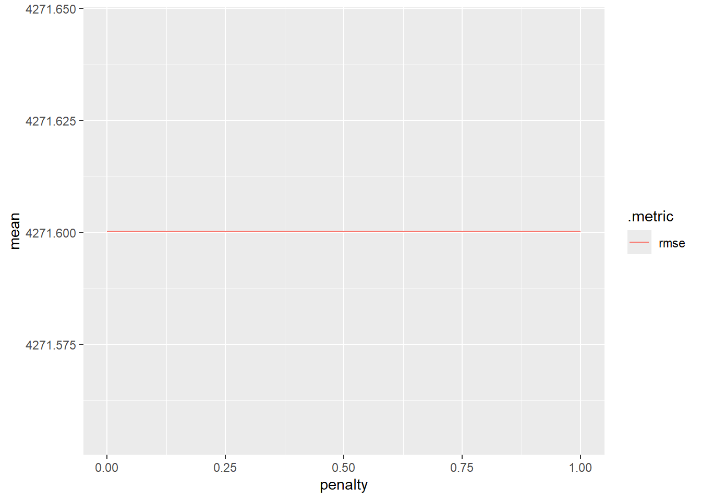
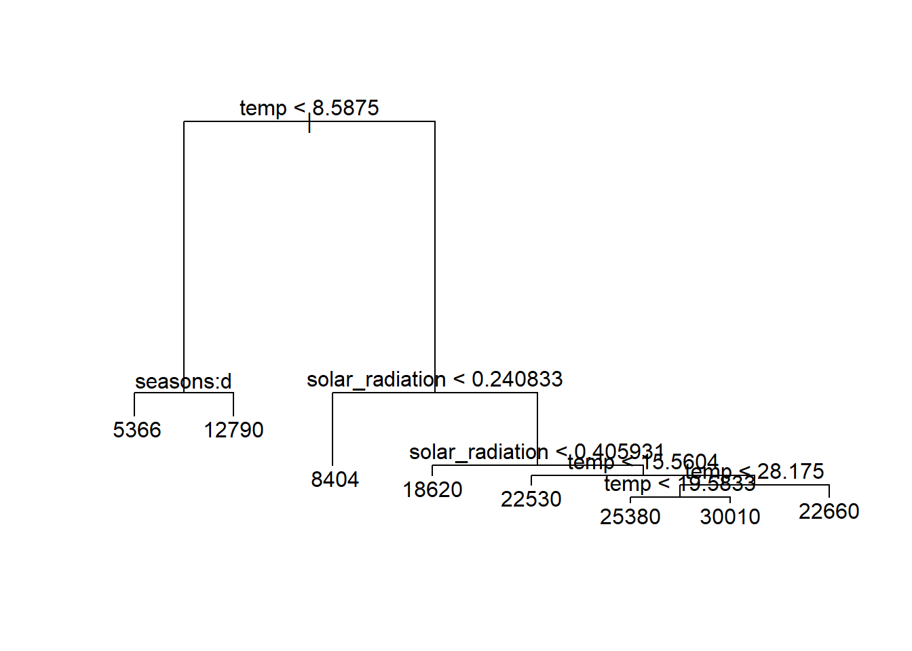
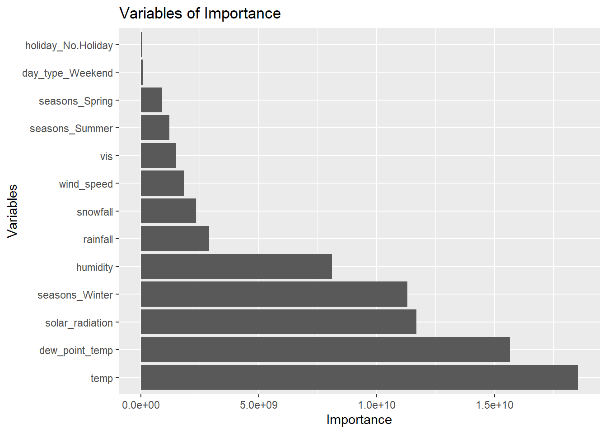
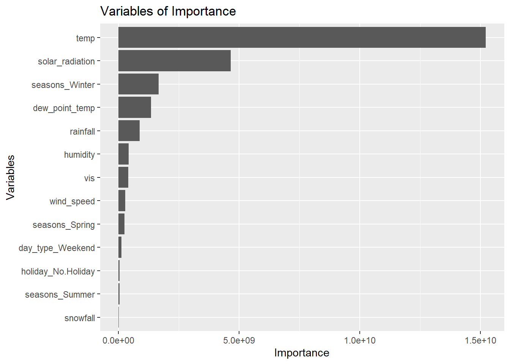

library(tidyverse)
library(tidymodels)
library(dplyr)
library(glmnet)
library(tree)
library(rpart)
library(rpart.plot)
library(baguette)
library(ranger)
bike_data <- read_csv("https://www4.stat.ncsu.edu/~online/datasets/SeoulBikeData.csv",
local = locale(encoding = "latin1"))
bike_data <- bike_data |>
mutate(date = lubridate::dmy(Date)) |>
select(-Date)
bike_data <- bike_data |>
mutate(seasons = factor(Seasons),
holiday = factor(Holiday),
fn_day = factor(`Functioning Day`)) |>
select(-Seasons, -Holiday, -`Functioning Day`)
bike_data <- bike_data |>
rename('bike_count' = `Rented Bike Count`,
'hour' = "Hour",
"temp" = `Temperature(°C)`,
"wind_speed" = `Wind speed (m/s)`,
"humidity" = `Humidity(%)`,
"vis" = `Visibility (10m)`,
"dew_point_temp" = `Dew point temperature(°C)`,
"solar_radiation" = `Solar Radiation (MJ/m2)`,
"rainfall" = "Rainfall(mm)",
"snowfall" = `Snowfall (cm)`)
bike_data <- bike_data |>
filter(fn_day == "Yes") |>
select(-fn_day)
bike_data <- bike_data |>
group_by(date, seasons, holiday) |>
summarize(bike_count = sum(bike_count),
temp = mean(temp),
humidity = mean(humidity),
wind_speed = mean(wind_speed),
vis = mean(vis),
dew_point_temp = mean(dew_point_temp),
solar_radiation = mean(solar_radiation),
rainfall = sum(rainfall),
snowfall = sum(snowfall)) |>
ungroup()
set.seed(11)
bike_split <- initial_split(bike_data, prop = 0.75, strata = seasons)
bike_train <- training(bike_split)
bike_test <- testing(bike_split)
bike_10_fold <- vfold_cv(bike_train, 10)
#Cleaned up code. We found MLR_rec1 to be the best model in HW8.
MLR_rec1 <- recipe(bike_count ~ ., data = bike_train) |>
step_date(date, features = "dow") |>
step_mutate(day_type = factor(if_else(date_dow %in% c("Sat", "Sun"), "Weekend", "Weekday"))) |>
step_rm(date, date_dow) |>
step_dummy(seasons, holiday, day_type) |>
step_normalize(all_numeric(), -bike_count)
MLR_spec <- linear_reg() |>
set_engine("lm")
#Need this code snippet for unfitted for later
MLR_wkf1 <- workflow() |>
add_recipe(MLR_rec1) |>
add_model(MLR_spec)
MLR_CV_fit1 <- workflow() |>
add_recipe(MLR_rec1) |>
add_model(MLR_spec) |>
fit_resamples(bike_10_fold)
final_fit <- workflow() |>
add_recipe(MLR_rec1) |>
add_model(MLR_spec) |>
last_fit(bike_split,metrics=metric_set(rmse,mae))Homework 9
Previous Code from HW8.
Output off.
Lasso Model
To Recap:
Our coefficient table for our MLR model from the previous HW.
#Final Model
final_fit |>
collect_metrics()# A tibble: 2 × 4
.metric .estimator .estimate .config
<chr> <chr> <dbl> <chr>
1 rmse standard 3980. Preprocessor1_Model1
2 mae standard 3039. Preprocessor1_Model1final_fit_co <- final_fit |>
extract_fit_parsnip() |>
tidy()
final_fit_co# A tibble: 14 × 5
term estimate std.error statistic p.value
<chr> <dbl> <dbl> <dbl> <dbl>
1 (Intercept) 17446. 252. 69.3 9.38e-165
2 temp -2439. 5215. -0.468 6.40e- 1
3 humidity -1927. 1904. -1.01 3.13e- 1
4 wind_speed -523. 286. -1.83 6.86e- 2
5 vis -63.7 361. -0.177 8.60e- 1
6 dew_point_temp 7143. 6143. 1.16 2.46e- 1
7 solar_radiation 4088. 473. 8.64 6.74e- 16
8 rainfall -1779. 333. -5.35 2.00e- 7
9 snowfall -317. 276. -1.15 2.50e- 1
10 seasons_Spring -2528. 355. -7.12 1.14e- 11
11 seasons_Summer -1670. 442. -3.78 1.98e- 4
12 seasons_Winter -3684. 501. -7.35 2.88e- 12
13 holiday_No.Holiday 835. 256. 3.26 1.28e- 3
14 day_type_Weekend -1050. 256. -4.10 5.56e- 5Now finding our LASSO model.
set.seed(11)
LASSO_spec <-linear_reg(penalty=tune(),mixture=1) |>
set_engine("glmnet")
LASSO_wkf <-workflow() |>
add_recipe(MLR_rec1) |>
add_model(LASSO_spec)
#Fitting the model
LASSO_grid <-LASSO_wkf |>
tune_grid(resamples = bike_10_fold,
grid = grid_regular(penalty(), levels = 200))
LASSO_grid[1, ".metrics"][[1]][[1]]
# A tibble: 400 × 5
penalty .metric .estimator .estimate .config
<dbl> <chr> <chr> <dbl> <chr>
1 1 e-10 rmse standard 4784. Preprocessor1_Model001
2 1.12e-10 rmse standard 4784. Preprocessor1_Model002
3 1.26e-10 rmse standard 4784. Preprocessor1_Model003
4 1.41e-10 rmse standard 4784. Preprocessor1_Model004
5 1.59e-10 rmse standard 4784. Preprocessor1_Model005
6 1.78e-10 rmse standard 4784. Preprocessor1_Model006
7 2.00e-10 rmse standard 4784. Preprocessor1_Model007
8 2.25e-10 rmse standard 4784. Preprocessor1_Model008
9 2.52e-10 rmse standard 4784. Preprocessor1_Model009
10 2.83e-10 rmse standard 4784. Preprocessor1_Model010
# ℹ 390 more rows200 seperate Lasso models. Plotting our RMSE.
LASSO_grid |>
collect_metrics() |>
filter(.metric == "rmse") |>
ggplot(aes(penalty, mean, color = .metric)) +
geom_line()
Interesting that they are the same. Finding the lowest penalty.
lowest_rmse <-LASSO_grid |>
select_best(metric="rmse")
lowest_rmse# A tibble: 1 × 2
penalty .config
<dbl> <chr>
1 0.0000000001 Preprocessor1_Model001Fitting our best model and printing coefficients.
LASSO_wkf |>
finalize_workflow(lowest_rmse)══ Workflow ════════════════════════════════════════════════════════════════════
Preprocessor: Recipe
Model: linear_reg()
── Preprocessor ────────────────────────────────────────────────────────────────
5 Recipe Steps
• step_date()
• step_mutate()
• step_rm()
• step_dummy()
• step_normalize()
── Model ───────────────────────────────────────────────────────────────────────
Linear Regression Model Specification (regression)
Main Arguments:
penalty = 1e-10
mixture = 1
Computational engine: glmnet LASSO_final <- LASSO_wkf |>
finalize_workflow(lowest_rmse) |>
fit(bike_train)
tidy(LASSO_final)# A tibble: 14 × 3
term estimate penalty
<chr> <dbl> <dbl>
1 (Intercept) 17446. 0.0000000001
2 temp 389. 0.0000000001
3 humidity -887. 0.0000000001
4 wind_speed -522. 0.0000000001
5 vis 0 0.0000000001
6 dew_point_temp 3752. 0.0000000001
7 solar_radiation 4065. 0.0000000001
8 rainfall -1841. 0.0000000001
9 snowfall -336. 0.0000000001
10 seasons_Spring -2505. 0.0000000001
11 seasons_Summer -1607. 0.0000000001
12 seasons_Winter -3653. 0.0000000001
13 holiday_No.Holiday 820. 0.0000000001
14 day_type_Weekend -1060. 0.0000000001Regression Tree Model
Seeing rough plot of our regression tree.
fitTree <- tree(bike_count ~ ., data = bike_train) Warning in tree(bike_count ~ ., data = bike_train): NAs introduced by coercionplot(fitTree)
text(fitTree)
Fitting/Tuning our model.
set.seed(11)
tree_mod <- decision_tree(tree_depth = tune(),
min_n = 20,
cost_complexity = tune()) |>
set_engine("rpart") |>
set_mode("regression")
tree_wkf <- workflow() |>
add_recipe(MLR_rec1) |>
add_model(tree_mod)
tree_grid <- grid_regular(cost_complexity(),
tree_depth(),
levels = c(10, 5))
tree_fits <- tree_wkf |>
tune_grid(resamples = bike_10_fold,
grid = tree_grid)
tree_fits |>
collect_metrics() # A tibble: 100 × 8
cost_complexity tree_depth .metric .estimator mean n std_err .config
<dbl> <int> <chr> <chr> <dbl> <int> <dbl> <chr>
1 0.0000000001 1 rmse standard 6432. 10 350. Prepro…
2 0.0000000001 1 rsq standard 0.595 10 0.0484 Prepro…
3 0.000000001 1 rmse standard 6432. 10 350. Prepro…
4 0.000000001 1 rsq standard 0.595 10 0.0484 Prepro…
5 0.00000001 1 rmse standard 6432. 10 350. Prepro…
6 0.00000001 1 rsq standard 0.595 10 0.0484 Prepro…
7 0.0000001 1 rmse standard 6432. 10 350. Prepro…
8 0.0000001 1 rsq standard 0.595 10 0.0484 Prepro…
9 0.000001 1 rmse standard 6432. 10 350. Prepro…
10 0.000001 1 rsq standard 0.595 10 0.0484 Prepro…
# ℹ 90 more rowsPlotting our RMSE values by tree depth.
tree_fits %>%
collect_metrics() %>%
mutate(tree_depth = factor(tree_depth)) %>%
ggplot(aes(cost_complexity, mean, color = tree_depth)) +
geom_line(size = 1.5, alpha = 0.6) +
geom_point(size = 2) +
facet_wrap(~ .metric, scales = "free", nrow = 2) +
scale_x_log10(labels = scales::label_number()) +
scale_color_viridis_d(option = "plasma", begin = .9, end = 0)Warning: Using `size` aesthetic for lines was deprecated in ggplot2 3.4.0.
ℹ Please use `linewidth` instead.
tree_fits |>
collect_metrics() |>
filter(.metric == "rmse") |>
arrange(mean)# A tibble: 50 × 8
cost_complexity tree_depth .metric .estimator mean n std_err .config
<dbl> <int> <chr> <chr> <dbl> <int> <dbl> <chr>
1 0.001 11 rmse standard 3817. 10 285. Preprocess…
2 0.001 15 rmse standard 3817. 10 285. Preprocess…
3 0.0000000001 11 rmse standard 3837. 10 302. Preprocess…
4 0.000000001 11 rmse standard 3837. 10 302. Preprocess…
5 0.00000001 11 rmse standard 3837. 10 302. Preprocess…
6 0.0000001 11 rmse standard 3837. 10 302. Preprocess…
7 0.000001 11 rmse standard 3837. 10 302. Preprocess…
8 0.00001 11 rmse standard 3837. 10 302. Preprocess…
9 0.0001 11 rmse standard 3837. 10 302. Preprocess…
10 0.0000000001 15 rmse standard 3837. 10 302. Preprocess…
# ℹ 40 more rowsLooks like tree depth of 11 or possibly 15 is our best fit. Finding the best model based on rmse.
tree_best_params <- select_best(tree_fits,metric= "rmse")
tree_best_params# A tibble: 1 × 3
cost_complexity tree_depth .config
<dbl> <int> <chr>
1 0.001 11 Preprocessor1_Model38Fitting our final model and plotting the tree.
tree_final_wkf <- tree_wkf |>
finalize_workflow(tree_best_params)
tree_final_fit <- tree_final_wkf |>
last_fit(bike_split)
tree_final_fit |>
collect_metrics()# A tibble: 2 × 4
.metric .estimator .estimate .config
<chr> <chr> <dbl> <chr>
1 rmse standard 3096. Preprocessor1_Model1
2 rsq standard 0.905 Preprocessor1_Model1tree_final_model <- extract_workflow(tree_final_fit)
tree_final_model |>
extract_fit_engine() |>
rpart.plot::rpart.plot(roundint = FALSE)
Bagged Tree Model
Fitting and bagging our model.
bag_spec <- bag_tree(tree_depth = 15, min_n = 20, cost_complexity = tune()) |>
set_engine("rpart") |>
set_mode("regression")
bag_wkf <- workflow() |>
add_recipe(MLR_rec1) |>
add_model(bag_spec)
bag_fit <- bag_wkf |>
tune_grid(resamples = bike_10_fold,
grid = grid_regular(cost_complexity(),
levels = 15),
metrics = metric_set(rmse))
bag_fit |>
collect_metrics() |>
filter(.metric=="rmse") |>
arrange(mean)# A tibble: 15 × 7
cost_complexity .metric .estimator mean n std_err .config
<dbl> <chr> <chr> <dbl> <int> <dbl> <chr>
1 3.73e- 8 rmse standard 3216. 10 182. Preprocessor1_Model05
2 4.39e-10 rmse standard 3256. 10 170. Preprocessor1_Model02
3 8.48e- 9 rmse standard 3273. 10 194. Preprocessor1_Model04
4 2.68e- 4 rmse standard 3274. 10 200. Preprocessor1_Model11
5 1.64e- 7 rmse standard 3283. 10 190. Preprocessor1_Model06
6 1.39e- 5 rmse standard 3287. 10 179. Preprocessor1_Model09
7 1.18e- 3 rmse standard 3312. 10 173. Preprocessor1_Model12
8 7.20e- 7 rmse standard 3323. 10 173. Preprocessor1_Model07
9 6.11e- 5 rmse standard 3330. 10 172. Preprocessor1_Model10
10 1 e-10 rmse standard 3362. 10 171. Preprocessor1_Model01
11 1.93e- 9 rmse standard 3379. 10 219. Preprocessor1_Model03
12 3.16e- 6 rmse standard 3431. 10 180. Preprocessor1_Model08
13 5.18e- 3 rmse standard 3532. 10 161. Preprocessor1_Model13
14 2.28e- 2 rmse standard 3956. 10 150. Preprocessor1_Model14
15 1 e- 1 rmse standard 4982. 10 170. Preprocessor1_Model15Selecting the best model.
bag_best_parmas <- select_best(bag_fit,metric="rmse")
#Best model
bag_best_parmas# A tibble: 1 × 2
cost_complexity .config
<dbl> <chr>
1 0.0000000373 Preprocessor1_Model05bag_final_wkf <- bag_wkf |>
finalize_workflow(bag_best_parmas)
bag_final_fit <- bag_final_wkf |>
last_fit(bike_split)
bag_final_fit |>
collect_metrics()# A tibble: 2 × 4
.metric .estimator .estimate .config
<chr> <chr> <dbl> <chr>
1 rmse standard 3084. Preprocessor1_Model1
2 rsq standard 0.907 Preprocessor1_Model1Plotting variables by importance.
bag_imp <- extract_fit_engine(bag_final_fit)
bag_imp$imp |>
mutate(term = factor(term,levels=term)) |>
ggplot(aes(x=term,y=value)) +
geom_bar(stat="identity") +
coord_flip() +
labs(
title = "Variables of Importance",
x = "Variables",
y = "Importance"
)
Random Forest Model
rf_spec <- rand_forest(mtry = tune()) |>
#it took me forever to figure out adding the impurity
set_engine("ranger",importance="impurity") |>
set_mode("regression")
rf_wkf <- workflow() |>
add_recipe(MLR_rec1) |>
add_model(rf_spec)
rf_fit <- rf_wkf |>
tune_grid(resamples = bike_10_fold,
grid = 10,
metrics = metric_set(rmse))i Creating pre-processing data to finalize unknown parameter: mtryrf_fit |>
collect_metrics() |>
filter(.metric =="rmse") |>
arrange(mean)# A tibble: 10 × 7
mtry .metric .estimator mean n std_err .config
<int> <chr> <chr> <dbl> <int> <dbl> <chr>
1 11 rmse standard 3013. 10 199. Preprocessor1_Model07
2 13 rmse standard 3014. 10 191. Preprocessor1_Model03
3 8 rmse standard 3030. 10 194. Preprocessor1_Model08
4 9 rmse standard 3037. 10 200. Preprocessor1_Model01
5 10 rmse standard 3044. 10 193. Preprocessor1_Model06
6 6 rmse standard 3080. 10 195. Preprocessor1_Model05
7 5 rmse standard 3102. 10 194. Preprocessor1_Model10
8 4 rmse standard 3156. 10 189. Preprocessor1_Model09
9 3 rmse standard 3212. 10 176. Preprocessor1_Model02
10 2 rmse standard 3455. 10 166. Preprocessor1_Model04Selecting best model
rf_best_params <-select_best(rf_fit,metric="rmse")
rf_best_params# A tibble: 1 × 2
mtry .config
<int> <chr>
1 11 Preprocessor1_Model07rf_final_wkf <- rf_wkf |>
finalize_workflow(rf_best_params)
rf_final_fit <- rf_final_wkf |>
last_fit(bike_split)Plotting Variables by importance.
rf_imp <- rf_final_fit |>
extract_fit_parsnip()
rf_imp_tib <- enframe(
rf_imp$fit$variable.importance,
name = "Variable",
value = "Importance"
) |>
arrange(desc(Importance))
ggplot(rf_imp_tib, aes(x = reorder(Variable, Importance), y = Importance)) +
geom_bar(stat="identity") +
coord_flip() +
labs(
title = "Variables of Importance",
x = "Variables",
y = "Importance"
)
Comparing all Models
MLR RMSE and MAE:
final_fit |>
collect_metrics()# A tibble: 2 × 4
.metric .estimator .estimate .config
<chr> <chr> <dbl> <chr>
1 rmse standard 3980. Preprocessor1_Model1
2 mae standard 3039. Preprocessor1_Model1Lasso RMSE and MAE:
lasso_metrics <- LASSO_final |>
predict(bike_test) |>
bind_cols(bike_test) |>
metrics(truth = bike_count, estimate = .pred) |>
filter(.metric %in% c("rmse", "mae"))
lasso_metrics# A tibble: 2 × 3
.metric .estimator .estimate
<chr> <chr> <dbl>
1 rmse standard 3999.
2 mae standard 3063.Regression Tree RMSE and MAE:
tree_final <- tree_final_wkf |>
finalize_workflow(tree_best_params) |>
fit(bike_train)
tree_metrics <- tree_final |>
predict(bike_test) |>
bind_cols(bike_test) |>
metrics(truth = bike_count, estimate = .pred) |>
filter(.metric %in% c("rmse", "mae"))
tree_metrics# A tibble: 2 × 3
.metric .estimator .estimate
<chr> <chr> <dbl>
1 rmse standard 3096.
2 mae standard 2362.Bagged Tree RMSE and MAE:
bag_final <- bag_wkf |>
finalize_workflow(bag_best_parmas) |>
fit(bike_train)
bag_metrics <- bag_final |>
predict(bike_test) |>
bind_cols(bike_test) |>
metrics(truth = bike_count, estimate = .pred) |>
filter(.metric %in% c("rmse", "mae"))
bag_metrics# A tibble: 2 × 3
.metric .estimator .estimate
<chr> <chr> <dbl>
1 rmse standard 3001.
2 mae standard 2372.Random Forest RMSE and MAE:
rf_final <- rf_final_wkf |>
finalize_workflow(rf_best_params) |>
fit(bike_train)
rf_metrics <- rf_final |>
predict(bike_test) |>
bind_cols(bike_test) |>
metrics(truth = bike_count, estimate = .pred) |>
filter(.metric %in% c("rmse", "mae"))
tree_metrics# A tibble: 2 × 3
.metric .estimator .estimate
<chr> <chr> <dbl>
1 rmse standard 3096.
2 mae standard 2362.Based on these values its hard to choose the exact best model. The bagged tree model has the lowest RMSE while random forest/regression tree have the lowest MAEs. Overall it looks like the bagged tree model works best.
Final Fit
Fitting to entire dataset.
bag_final_fitted <- bag_wkf |>
finalize_workflow(bag_best_parmas) |>
fit(bike_data)
bag_final_fitted══ Workflow [trained] ══════════════════════════════════════════════════════════
Preprocessor: Recipe
Model: bag_tree()
── Preprocessor ────────────────────────────────────────────────────────────────
5 Recipe Steps
• step_date()
• step_mutate()
• step_rm()
• step_dummy()
• step_normalize()
── Model ───────────────────────────────────────────────────────────────────────
Bagged CART (regression with 11 members)
Variable importance scores include:
# A tibble: 13 × 4
term value std.error used
<chr> <dbl> <dbl> <int>
1 temp 24435074618. 323686050. 11
2 dew_point_temp 20249058377. 373596038. 11
3 solar_radiation 16394350753. 308631743. 11
4 seasons_Winter 14868447566. 511701608. 11
5 humidity 10144347684. 365327408. 11
6 rainfall 4526568153. 444264734. 11
7 seasons_Summer 3053670335. 980074319. 11
8 seasons_Spring 2219357378. 221822818. 11
9 snowfall 2002996175. 691068746. 10
10 wind_speed 1648381587. 340863119. 11
11 vis 1316309005. 208399310. 11
12 day_type_Weekend 228322651. 40254588. 11
13 holiday_No.Holiday 38907538. 15491733. 11